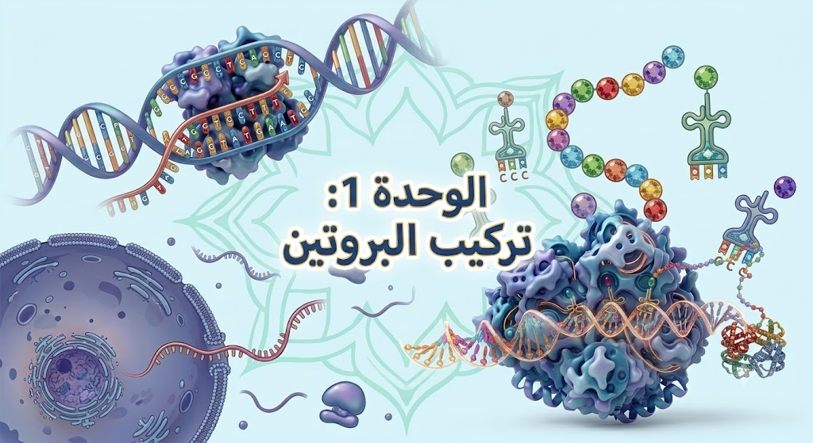
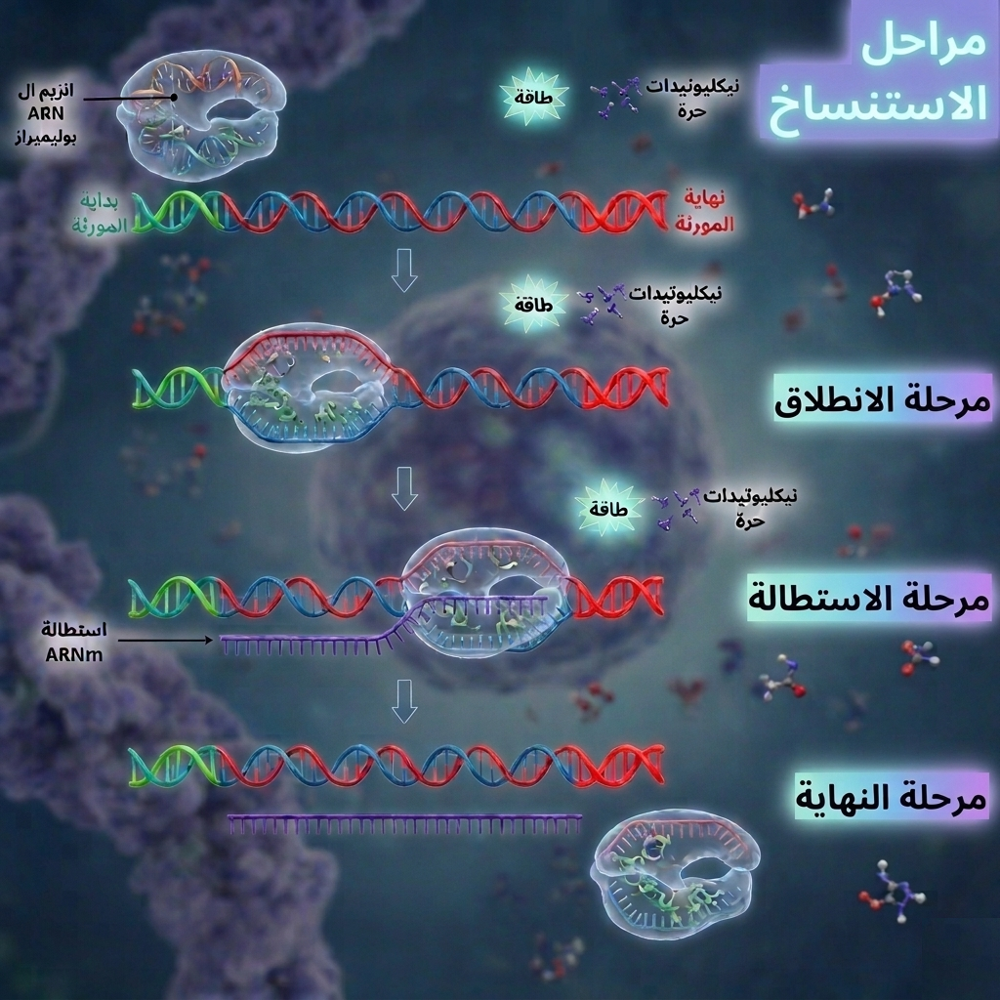
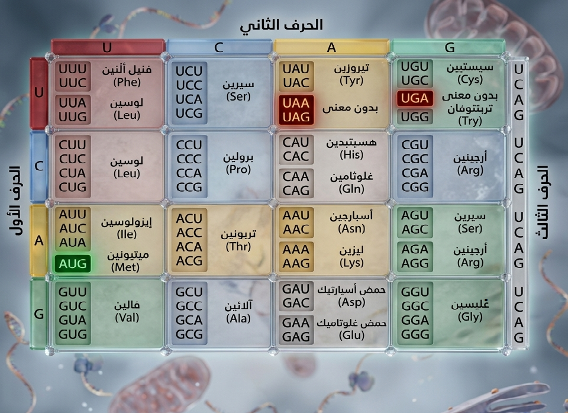
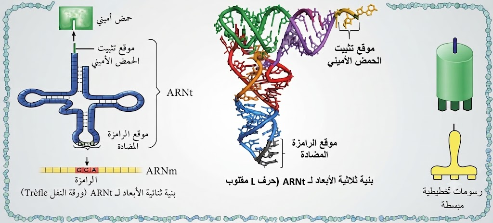
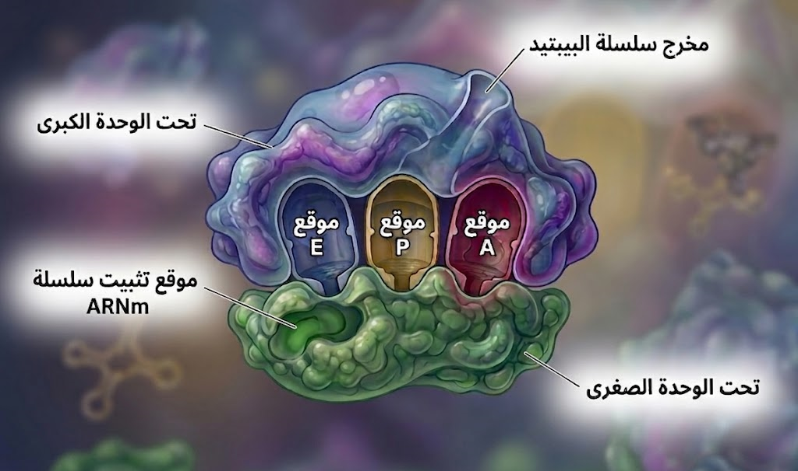
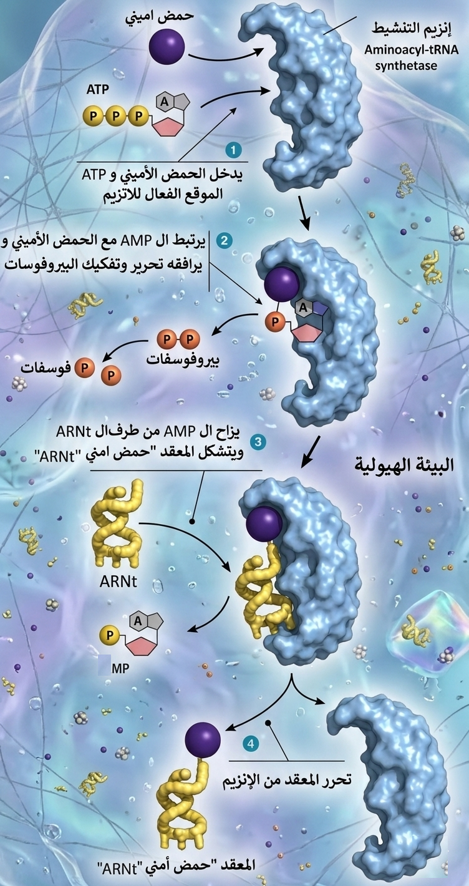
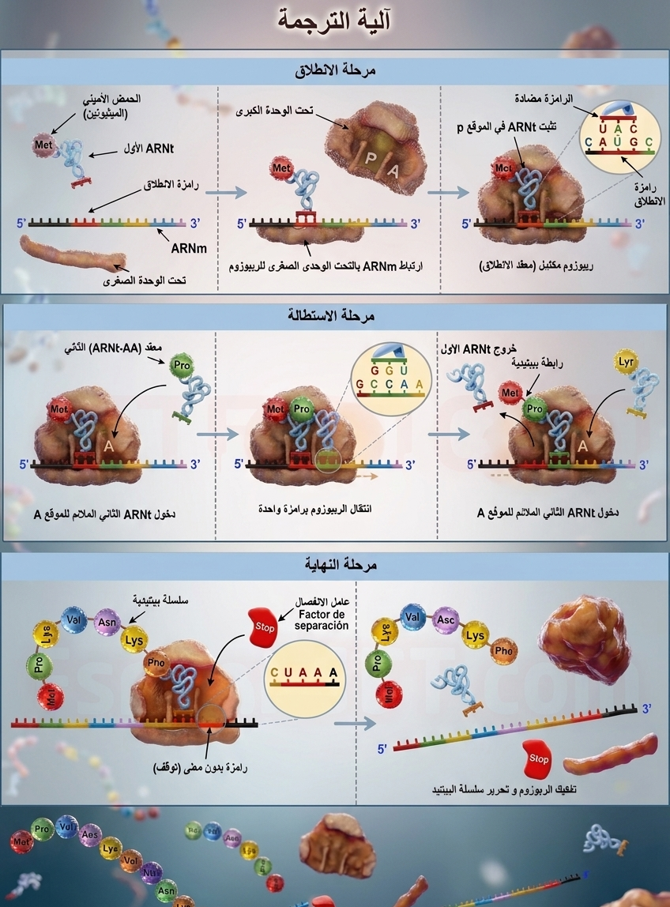

الوحدة 1: تركيب البروتين
01 التخصص الوظيفي والتحكم في التعبير المورثي
02 المقر الخلوي لبناء البروتين والوسيط الناقل
03 التركيب الكيميائي والبنية الفضائية للـ ARN
04 التفصيل الجزيئي لآلية الاستنساخ (Transcription)
أ- مرحلة الانطلاق (الانكشاف):
يرتبط إنزيم ARN بوليميراز (ARN Polymérase) بمنطقة نوعية من الـ ADN تُعرف بـ المحفز (Promoteur). يقوم الإنزيم بكسر الروابط الهيدروجينية بين القواعد الآزوتية للمتكاملتين، مما يؤدي إلى انفصال سلسلتي الـ ADN وزوال الالتفاف الحلزوني لتتشكل فقاعة الاستنساخ. يبدأ الإنزيم قراءة تتابع النيكليوتيدات على السلسلة المستنسخة (المعبرة) لبدء تكثيف النيكليوتيدات الريبية الأولى.
ب- مرحلة الاستطالة:
يتحرك إنزيم ARN Polymérase على طول السلسلة المستنسخة لقراءتها في الاتجاه 3' → 5'، بينما يتم بناء جزيء الـ ARNm في الاتجاه 5' → 3'. يقوم الإنزيم بقراءة النيكليوتيدات على السلسلة المستنسخة وربط النيكليوتيدات الريبية الحرة المتواجدة في العصارة النووية حسب مبدأ التكامل بين القواعد الآزوتية: يضع اليوراسيل (U) مقابل الأدينين (A)، الأدينين (A) مقابل التيمين (T)، والغوانين (G) مقابل السيتوزين (C). تتشكل روابط إستر-فوسفاتية بين النيكليوتيدات المتتالية لتستطيل سلسلة الـ ARNm تدريجياً.
ج- مرحلة النهاية:
عند وصول الإنزيم إلى مُشار النهاية (تتابع التوقف) على المورثة، ينفصل إنزيم ARN Polymérase عن المورثة، ويتنسخ جزيء الـ ARN الرسول الأولي (ARNm) لكي يتحرر، بينما تعود سلسلتا الـ ADN للالتحام وإعادة التفاف الحلزوني التلقائي عبر تشكل الروابط الهيدروجينية مجدداً.

05 نضج الـ ARNm وعملية القص والربط (معلومة اضافية)
06 الشفرة الوراثية وتجربة نيرنبرغ التاريخية
• إذا كانت الشفرة أحادية (4¹ = 4): تُشفر لـ 4 أحماض أمينية فقط (وهو غير كافٍ لـ 20 حمضاً).
• إذا كانت الشفرة ثنائية (4² = 16): تُشفر لـ 16 حمضاً أمينياً فقط (وهو أيضاً غير كافٍ).
• إذا كانت الشفرة ثلاثية (4³ = 64): تُوفر 64 رامزة، وهو عدد أكثر من كافٍ لتشفير الـ 20 حمضاً أمينياً.
قام العالم نيرنبرغ بإثبات هذه الحسابات تجريبياً باستعمال مستخلص خلوي مع خيط اصطناعي (Poly-U)، حيث اكتشف أن الرامزة UUU تشفر للحمض الأميني الفينيل ألانين (Phe).
1. خاصية التثليث وحساب الرامزات
تتكون الرامزة (Codon) من تتابع 3 نيوكليوتيدات متتالية. المجموع الكلي للرامزات هو 4³ = 64 رامزة، تنقسم إلى: 61 رامزة دالة تُشفر للأحماض الأمينية، و3 رامزات غير دالة (رامزات توقف).
2. عدم الإبهام والترادف
بما أن عدد الرامزات الدالة (61) أكبر من عدد الأحماض الأمينية (20)، نجد أن للحمض الأميني الواحد عدة رامزات مترادفة، بينما الرامزة الواحدة تشفر لحمض أميني واحد فقط بدون إبهام.
3. الشمولية والرامزات الخاصة
الشفرة عالمية وموحدة لكل الكائنات الحية. تبدأ الترجمة دائماً بـ رامزة الانطلاق AUG (تشفر للميثيونين Met)، وتتوقف عند رامزات التوقف (UAA, UAG, UGA).

07 البنية الفضائية والوظيفية للـ ARNt
يتميز جزيء الـ ARNt بوجود موقعين وظيفيين أساسيين:
• موقع تثبيت الحمض الأميني: يقع في النهاية 3' ويتميز بتتابع نيوكليوتيدي ثابت هو CCA.
• موقع الرامزة المضادة (Anticodon): يتكون من ثلاثية نيوكليوتيدية نوعية تتكامل مع الرامزة الموافقة لها على جزيء الـ ARNm، مما يضمن التعرف النوعي ودقة وضع الحمض الأميني في السلسلة الببتيدية أثناء الترجمة.

08 بنية ووظيفة الريبوزوم (The Ribosome)
• تحت الوحدة الصغرى: تحتوي على موقع تثبيت وقراءة الـ ARNm، وتسمح بانزلاقه لقراءة الرامزات متتالية.
• تحت الوحدة الكبرى: تحتوي على موقعين تحفيزيين رئيسيين ونفق خروج:
- الموقع البيبتيدي (P): موقع تثبيت جزيء الـ ARNt الحامل للسلسلة البيبتيدية النامية.
- الموقع الأميني (A): موقع استقبال جزيء الـ ARNt الجديد الحامل للحمض الأميني المنشط الموالي.
- موقع (نفق) خروج السلسلة البيبتيدية: ممر ممتد في تحت الوحدة الكبرى يسمح بخروج السلسلة البيبتيدية المتشكلة تدريجياً أثناء استطالتها.
- (معلومة إضافية خارج المقرر: تحتوي تحت الوحدة الكبرى أيضاً على **الموقع E** لخروج جزيئات الـ ARNt الشاغرة).

09 آلية تنشيط الأحماض الأمينية (Activation)
1. مرحلة تثبيت الحمض الأميني والـ ATP وتشكل المركب الانتقالي:
يتعرف إنزيم التنشيط بفضل التكامل البنيوي لموقعه الفعال فيثبت كلاً من الحمض الأميني وجزيء الـ ATP. يُحفز الإنزيم إماهة الـ ATP وتنفصل جزيئة البيوفوسفات (PPi)، مما يؤدي إلى ربط الحمض الأميني بـ AMP وتشكل مركب انتقالي مؤقت: أمينوأسيل-AMP متصل بالإنزيم.
2. مرحلة تثبيت الـ ARNt وتشكيل الرابطة الطاقوية:
يرتبط جزيء الـ ARNt الموافق بموقعه الخاص على الإنزيم، فتُنقل الطاقة من المركب الانتقالي ليتشكل رابطة تساهمية غنية بالطاقة بين الحمض الأميني والنهاية '3 لجزيء الـ ARNt، مع تحرر جزيء الـ AMP.
3. مرحلة تحرر الناتج واسترجاع الإنزيم:
ينفصل الناتج النهائي وهو **المعقد المنشط: "حمض أميني - ARNt" (أمينوأسيل-ARNt)** عن الموقع الفعال للإنزيم وينطلق نحو الريبوزوم، بينما يسترجع الإنزيم حالته الأصلية ليكون جاهزاً لتكرار التفاعل.

10 التفصيل الجزيئي لآلية الترجمة (Translation)
أ- مرحلة الانطلاق (Initiation Phase):
تبدأ المرحلة بارتباط تحت الوحدة الصغرى للريبوزوم بخيط الـ ARNm عند رامزة البداية (AUG). يتوضع الـ ARNt الأول الحامل لحمض الميثيونين (Met) في الموقع P بفضل التكامل بين رامزته المضادة (UAC) ورامزة البداية. ترتبط بعدها تحت الوحدة الكبرى ليتشكل معقد الانطلاق، حيث يكون الموقع P مشغولاً والموقع A شاغراً.
ب- مرحلة الاستطالة (Elongation Phase):
يتوضع جزيء ARNt ثانٍ حامل لـ حمض أميني ثانٍ في الموقع A الشاغر بفضل التكامل بين رامزته المضادة والرامزة الثانية. تتشكل رابطة ببتيدية بين الحمض الأميني الأول والحمض الأميني الثاني بتدخل إنزيم نوعي واستهلاك طاقة. ينفصل الـ ARNt الأول، وينتقل الريبوزوم بمقدار رامزة واحدة (3 نكليوتيدات) باتجاه النهاية '3، فيصبح الـ ARNt الثاني في الموقع P ويفرغ الموقع A لاستقبال ناقل جديد. تتكرر هذه الدورة فتستطيل السلسلة الببتيدية تدريجياً.
ج- مرحلة النهاية (Termination Phase):
تنتهي الترجمة عند وصول الموقع A إلى إحدى رامزات التوقف الثلاث (UAA, UAG, UGA). يتدخل عامل التحرير (Release Factor) الذي يفصل السلسلة الببتيدية المتشكلة، وتتفكك تحت وحدتي الريبوزوم وينفصل خيط الـ ARNm. ينفصل حمض الميثيونين (Met) الأول عن بداية السلسلة، ثم تنطوي السلسلة الببتيدية لتتخذ بنيتها الفراغية وتصبح بروتيناً وظيفياً.

11 دور متعدد الريبوزوم (Polysome) في الإنتاجية
متعدد الريبوزوم (البوليزوم) هو عبارة عن مجموعة من الريبوزومات ترتبط بـ ARNm واحد وقراءة تسلسله النكليوتيدي في نفس الوقت. يقضي كل ريبوزوم بتركيب سلسلة ببتيدية كاملة ومماثلة للآخرين. تسمح هذه الآلية بـ تركيب كميات كبيرة من نفس البروتين في وقت قصير وبـ جهد أقل انطلاقاً من جزيء واحد من الـ ARNm.
12 اكتساب البنية الفراغية وانطواء السلسلة
بعد اكتمال تركيب السلسلة الببتيدية، يحدث لها انطواء وتفاف تلقائي لتكتسب بنية فراغية ثلاثية الأبعاد مستقرة. يعود استقرار البنية الفراغية إلى تشكل روابط كيميائية (هيدروجينية، شاردية، تجاذب الجذور الكارهة للماء، وجسور ثنائية الكبريت) بين جذور أحماض أمينية متموضعة بطريقة محددة في السلسلة. يحدد نوع وترتيب وموقع الأحماض الأمينية البنية الفراغية للبروتين، والتي تكسبه تخصصه الوظيفي.
13 دور جهاز غولجي في نضج وتوجيه البروتين (معلومة اضافية)
تنتقل البروتينات غير الناضجة المُصنّعة في الشبكة الهيولية المحببة عبر حويصلات انتقالية إلى جهاز غولجي. تطرأ عليها داخل أكياسه تعديلات كيميائية (مثل الغلوزة - إضافة السكريات) لاكتساب البنية الفراغية الناضجة والوظيفية. تُفرز البروتينات الناضجة بعدها داخل حويصلات إفرازية لتوجّه نحو الغشاء الهيولي قصد طرحها بـ الإطراح الخلوي، أو تُوجّه إلى عضيات خلوية أخرى لاستعمالها.
14 العلاقة الجزيئية بين المورثة والنمط الظاهري
تُحدد المعلومة الوراثية المحمولة على ADN المورثة تتالي الأحماض الأمينية في البروتين (النمط الظاهري على المستوى الجزيئي). يحدد البروتين بدور اختلاله أو سلامته شكل ووظيفة الخلية (النمط الظاهري على المستوى الخلوي)، والذي ينعكس بدوره على صفات الفرد (النمط الظاهري على مستوى العضوية). يؤدي حدوث أي تغيّر في تتالي النكليوتيدات (طفرة وراثية) إلى تغيّر في تتالي الأحماض الأمينية، مما يغير البنية الفراغية للبروتين وفقدان تخصصه الوظيفي، وينتج عن ذلك تغير في الصفة أو ظهور مرض وراثي.
15 التأثير الجزيئي للمضادات الحيوية على البكتيريا (معلومة اضافية)
تُستعمل المضادات الحيوية لتثبيط تركيب البروتين لدى البكتيريا (بدائيات النوى) بالتأثير النوعي على إحدى مراحل التعبير المورثي:
• مرحلة الاستنساخ: يرتبط مضاد Rifampicine بإنزيم ARN بوليميراز ويمنع تصنيع الـ ARNm.
• مرحلة الترجمة: يمنع Tetracycline تثبيت معقد أمينوأسيل-ARNt في الموقع A للريبوزوم، بينما يثبت Streptomycin على تحت الوحدة الصغرى ويعرقل قراءة الرامزات.
يؤدي هذا التثبيط النوعي إلى توقف نمو وتكاثر البكتيريا وموتها بسبب غياب البروتينات الضرورية لحياتها.
16 تفكيك الـ ARNm وإعادة استعمال النكليوتيدات (معلومة اضافية)
بعد انتهاء عملية الترجمة، يُفرّق ARNm ويتفكك في الهيولى بتدخل إنزيمات نوعية (Ribonucleases) إلى نكليوتيدات ريبية حرة. تُعاد إعادة استعمال هذه النكليوتيدات الحرة ونقلها إلى النواة لاستغلالها في عمليات استنساخ جديدة عند حاجة الخلية لبروتينات أخرى. يسمح عمر الـ ARNm المحدود بـ المراقبة الدقيقة لمعدل التعبير المورثي وتوقيف تركيب البروتين فور عدم الحاجة إليه.